Setiap hari rasanya seperti gagal. Kamu capek. Bingung. Mungkin juga takut.
Takut kehilangan dia ke teman-temannya, ke HP-nya, ke suasana hatinya.
Takut cara yang kamu pakai selama ini nggak berhasil.
Takut semuanya sudah terlambat.
Tugasmu memimpin dia, tanpa kehilangan dia.
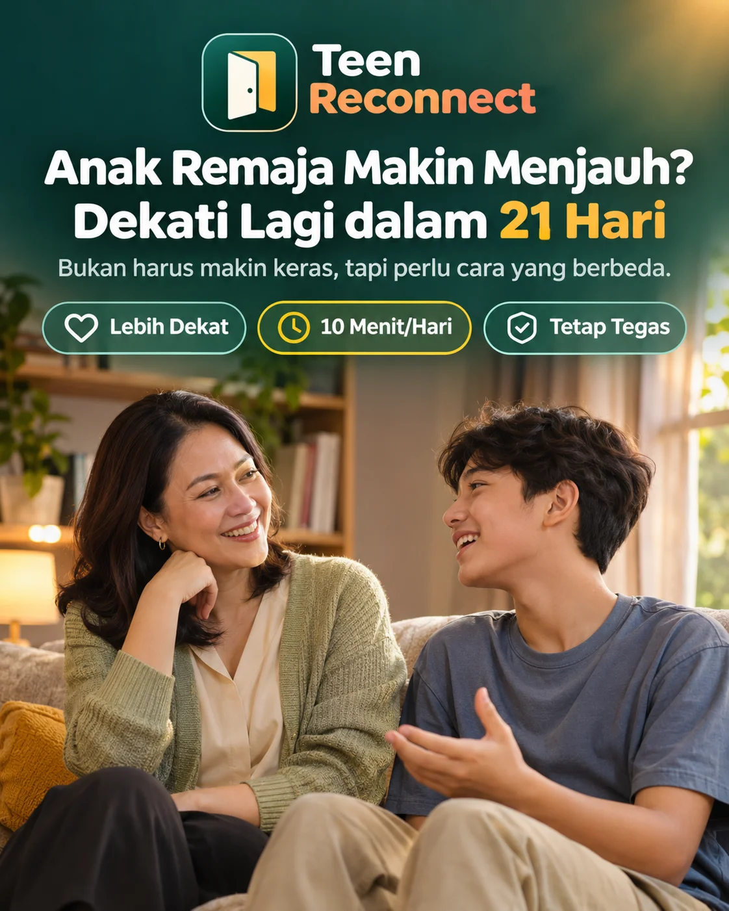
Teen Reconnect adalah app di HP dengan Metode Naik Kelas 21 Hari untuk orang tua anak 12 sampai 19 tahun. Tiap hari satu langkah kecil, kalimat siap pakai, dan catatan singkat sebelum tidur. 10 menit sehari.
Dibuka dari browser HP atau laptop. Tanpa install, tanpa akun.
Sekarang yang kamu dapat cuma gumaman. Mata yang diputar. Pintu kamar yang ditutup keras.
“Biasa aja.”
Kamu tanya sekolahnya gimana. Jawabannya satu kata, earbuds tetap di telinga.
“Mama nggak ngerti!”
Kamu coba bantu, dia bilang kamu nggak ngerti.
“Ya udah, terserah.”
Kamu mundur, dia merasa kamu nggak peduli.
Setiap hari rasanya seperti gagal. Kamu capek. Bingung. Mungkin juga takut.
Takut kehilangan dia ke teman-temannya, ke HP-nya, ke suasana hatinya.
Takut cara yang kamu pakai selama ini nggak berhasil.
Takut semuanya sudah terlambat.
Ini yang jarang dikatakan orang:
Dia bukan menolak kamu. Dia menolak masa kecilnya. Kalau kamu terus memperlakukannya seperti anak 9 tahun, kamu bisa kehilangan dia di umur 19.
Kenyataannya
Anakmu sedang melakukan persis yang memang harus dia lakukan:
Masalahnya bukan dia. Masalahnya, nggak ada yang pernah mengajarimu cara memimpin anak di tahap ini. Jadi kamu bolak-balik di empat ujung:
dia makin melawan
dia kehilangan arah
dia berhenti menghargai
dia merasa ditinggal
Kamu nggak gagal. Kamu cuma masih pakai alat lama untuk pekerjaan yang butuh keterampilan yang sama sekali berbeda.
Bayangkan
Memperkenalkan
Ini bukan kursus parenting penuh teori dan nasihat manis. Ini kerangka lengkap untuk melewati tahun-tahun paling sulit jadi orang tua, dengan hubungan kalian, kewarasanmu, dan masa depan anakmu tetap utuh. Bedanya, kamu nggak perlu menonton atau membaca berjam-jam. App-nya yang menuntun, satu langkah setiap hari.
Metode Naik Kelas 21 Hari:
Berhenti melakukan hal yang bikin dia menutup pintu: bertanya beruntun, ceramah, membandingkan, membereskan semuanya untuk dia.
Masuk pelan-pelan ke dunianya: ngobrol sambil berdampingan, minatnya, satu kegiatan bareng.
Pimpin dia sebagai orang yang udah gede: aturan tetap jalan tanpa marah, dia diberi peran, hal berat dibicarakan tanpa ceramah.
Aturan yang dijaga app: satu langkah per hari, dan langkah berikutnya baru terbuka besok pagi. Jadi perubahannya benar-benar dijalani 21 hari, bukan dibaca habis semalam lalu dilupakan.
Kodenya ada di Panduan Akses di emailmu. Cukup sekali.
Umur dan jenis kelamin anak, tanda yang paling terasa di rumah, dan 8 pernyataan tentang caramu selama ini. Hasilnya Profil: ujung mana yang paling sering kamu pakai (ketat, longgar, terbawa perasaan, atau jauh) dan fokus 21 harimu. Bukan nilai, bukan diagnosis.
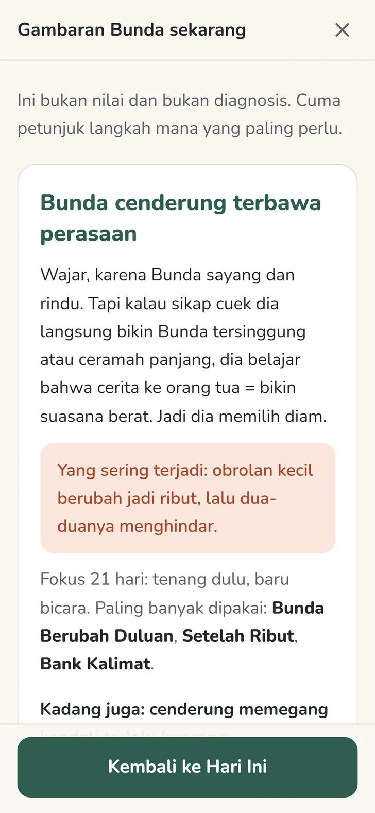
Sapa dia satu kali tanpa pertanyaan apa pun, lalu biarkan. Kedengarannya kecil. Coba dulu.
Kerangkanya
Kenapa dia berhenti cerita, dan cara jadi orang yang dia mau ajak ngobrol lagi. Cara tetap tenang saat dia nggak tenang. Membangun kepercayaan lagi tanpa mengemis persetujuannya.
Di app: Cek Awal dan Profil, tahap Berhenti, Bank Kalimat.
Kenapa dia kelihatan malas, dan cara berhenti membereskan semuanya untuk dia. Mengenali pemicumu sendiri dan pola yang dulu kamu terima dari orang tuamu.
Di app: Biarkan Dia yang Tanggung, Bunda Berubah Duluan.
Disiplin yang membentuk karakter, bukan dendam. Memegang batas tanpa memutus hubungan. Obrolan setelah ribut yang benar-benar mengubah keadaan.
Di app: Aturan Tanpa Marah, Jeda 90 detik, Setelah Ribut.
HP, rokok, pergaulan, dan cara membicarakannya tanpa ceramah. Membangun kedekatan lewat kegiatan bareng. Tahu kapan harus minta bantuan profesional.
Di app: Bank Kalimat, kesepakatan HP malam, Tantangan Bareng, Tanda Bahaya.
Bukan cuma dia yang berubah, kamu juga. Melepas tanpa meninggalkan. Membangun hubungan dewasa ke dewasa yang bertahan seumur hidup.
Di app: tahap Pimpin, Untuk Ayah, cek ulang Profil di hari 21.
Langkah Harian
Tiap kartu berisi Pahami (dibaca satu menit), Lakukan (satu aksi kecil, sering dengan contoh kalimat yang tinggal diucapkan), dan satu pertanyaan untukmu sendiri. Contohnya: biarkan dia yang pilih lagu di mobil, ketuk pintunya sebelum masuk, ceritakan satu kesalahanmu waktu remaja.
Kamu nggak perlu menunggu dia berubah. Kamu yang jalan duluan, dia yang merasakan bedanya.
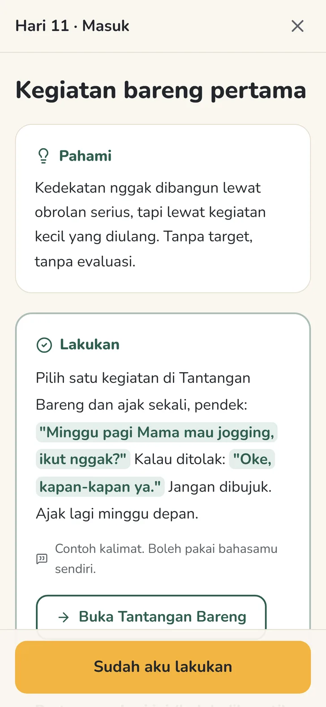
12 situasi yang paling sering bikin buntu: jawab “biasa aja”, pulang telat, membentak, nggak mau ikut acara keluarga, nilai jelek, main HP terus, susah diajak salat, sampai “Mama nggak ngerti!”. Tiap kartu menulis kalimat yang biasa keluar, penggantinya, kapan diucapkan, dan kapan lebih baik diam.
Daripada “Dari mana aja kamu jam segini?!”, coba “Mama lega kamu udah sampai. Kita ngobrol besok pagi ya.”
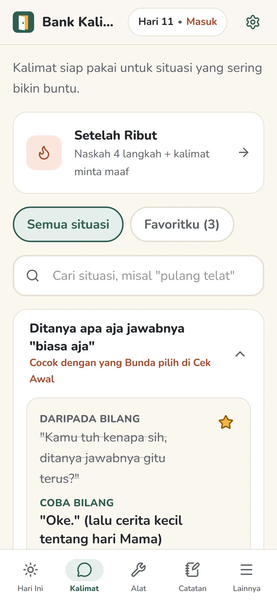
Catatan Malam
Sebelum tidur, tiga ketukan: siapa yang memulai obrolan, seberapa panjang jawabannya, ada kegiatan bareng atau nggak. Satu menit, cuma kamu yang baca.
Di hari 7, 14, dan 21 catatan itu jadi grafik. Hari ketika dia yang memulai obrolan ditandai bintang kuning, supaya momen kecil itu nggak terlewat.
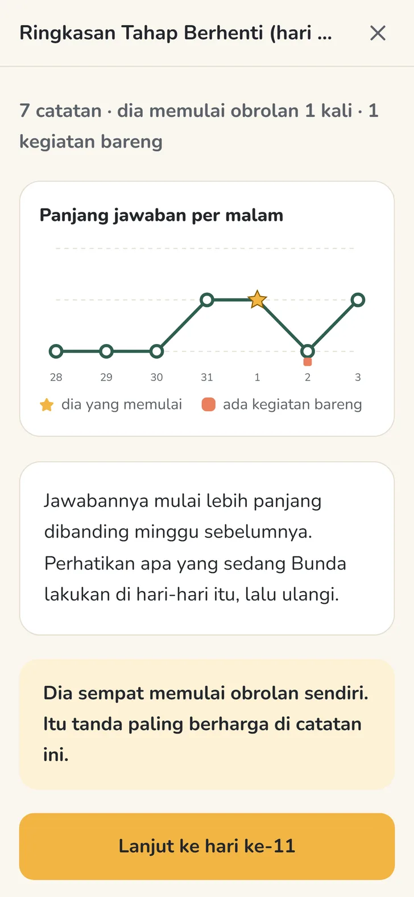
Tanpa akun dan password. Nama anak, jawaban Cek Awal, catatan malam, dan aturan rumahmu tersimpan di HP-mu, tidak dikirim ke mana pun.
Dibuka dari browser HP atau laptop, bisa dipasang di layar utama. Sapaan bisa Bunda atau Ayah, hurufnya bisa dibesarkan.
Semuanya bisa dibuka kapan saja. Geser untuk melihat yang lain.
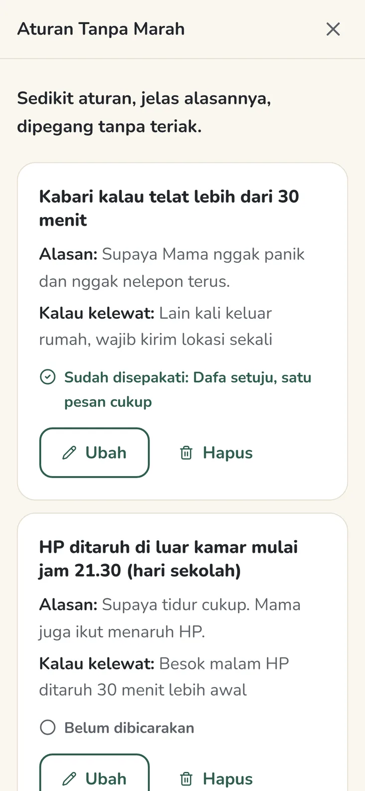
Pilih maksimal 5 aturan (kabar kalau telat, HP malam, tugas rumah, dan lainnya), tulis alasannya, lalu bicarakan bareng dia dengan skrip pembuka 5 langkah. Dia ikut menentukan akibatnya. Setelah sepakat, cetak jadi Kesepakatan Rumah dan tempel di kulkas.
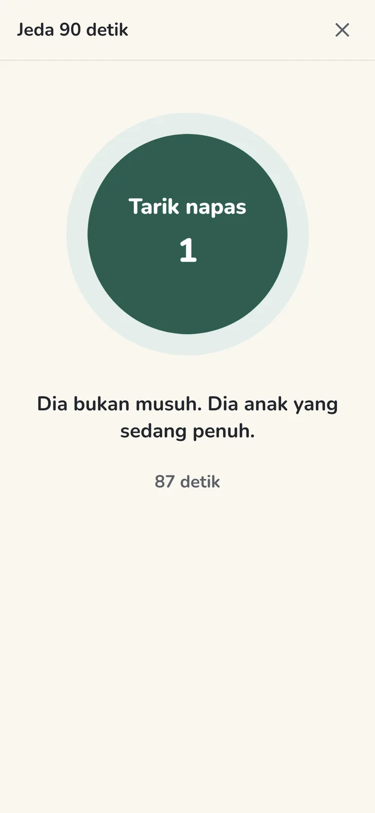
Untuk saat dada mulai panas, sebelum bicara. Pamit ke dapur, tekan Mulai jeda, ikuti lingkaran napas di layar. Setelah itu kembali dengan satu kalimat, bukan ceramah.
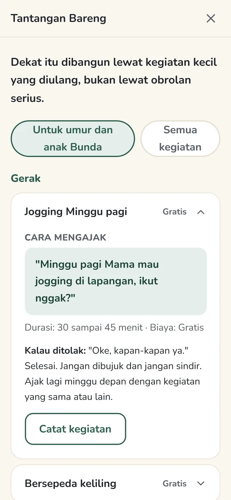
19 kegiatan murah meriah: jogging Minggu pagi, masak menu baru, servis motor, sampai ikut main game-nya sekali. Tiap kegiatan ada cara mengajak dan saran kalau ditolak. Catat siapa yang mengajak, karena hari dia yang mengajak itu berharga.
Juga ada naskah Setelah Ribut dengan 5 kalimat minta maaf, Biarkan Dia yang Tanggung, Bunda Berubah Duluan, Untuk Ayah, Tanda Bahaya, 3 bonus cetak, dan Pindah Progres untuk ganti HP.
Kenapa ini beda
Setiap langkah praktis dan bisa langsung dipakai malam ini, di rumah sungguhan, dengan anak remaja sungguhan.
Nggak ada orang tua yang nggak pernah salah. Profilmu bukan nilai, cuma arah yang perlu diseimbangkan.
Kamu nggak harus jadi orang tua sempurna. Cukup jadi yang paling stabil di rumah.
HP, game, pergaulan, rokok. Yang kamu hadapi hari ini, bukan contoh dari buku lama.
Tujuannya bukan membesarkan anak yang cuma nurut. Tujuannya membesarkan orang dewasa yang mandiri, dan tetap memilih menelepon kamu.
menuntunmu satu langkah kecil setiap hari selama 21 hari, memberi kalimat siap pakai untuk situasi yang bikin buntu, membantu memegang aturan tanpa marah, menyediakan ide kegiatan bareng, dan menunjukkan perubahan kecil lewat catatanmu sendiri.
jaminan anak pasti berubah atau pasti cerita dalam waktu tertentu, karena setiap anak berbeda. Bukan layanan psikologi atau terapi. Bukan alat untuk mengawasi HP atau lokasi anak. Kalau anak melukai diri, bicara soal mati, memakai narkoba, mengalami kekerasan, menarik diri total, atau berhenti sekolah, hubungi psikolog, konselor sekolah, atau puskesmas dulu. Daftarnya ada di menu Tanda Bahaya.
| Buku atau ebook parenting | Webinar dan kelas parenting | Konsultasi psikolog | Teen Reconnect | |
|---|---|---|---|---|
| Cara pakainya | Dibaca, lalu dicoba sendiri | Ditonton sekali, lalu dicoba sendiri | Sesi terjadwal dengan profesional | Satu langkah kecil tiap hari, 10 menit |
| Kalimatnya | Contoh umum di dalam bab | Tergantung pemateri | Disusun bareng psikolog | 12 situasi, tinggal dipakai malam ini |
| Sesuai rumahmu | Nggak | Nggak | Ya | Dari Cek Awal dan tanda yang kamu pilih |
| Bisa lihat perubahan | Nggak ada catatan | Nggak ada catatan | Lewat sesi berikutnya | Catatan malam jadi grafik di hari 7, 14, 21 |
| Biaya | Sekitar Rp100 ribu sampai Rp200 ribu | Rp50 ribu sampai Rp500 ribu per paket | Rp200 ribu sampai Rp600 ribu per sesi | Sekali bayar, tanpa langganan |
Dari orang tua yang sudah pakai
Geser untuk melihat cerita lainnya. Nomor disensor untuk menjaga privasi.
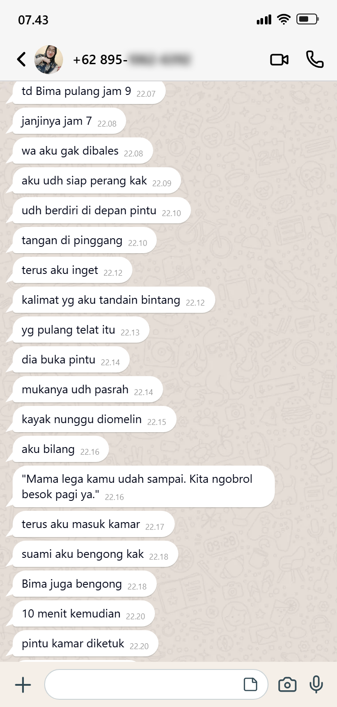
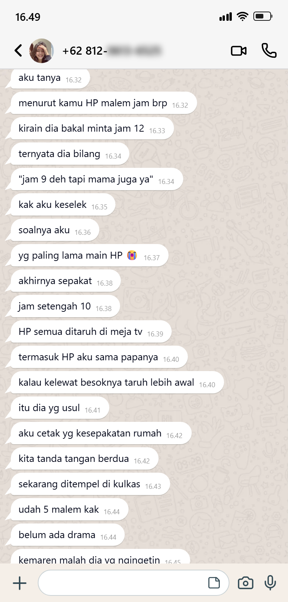
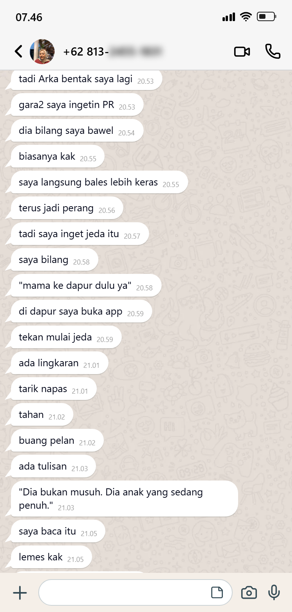
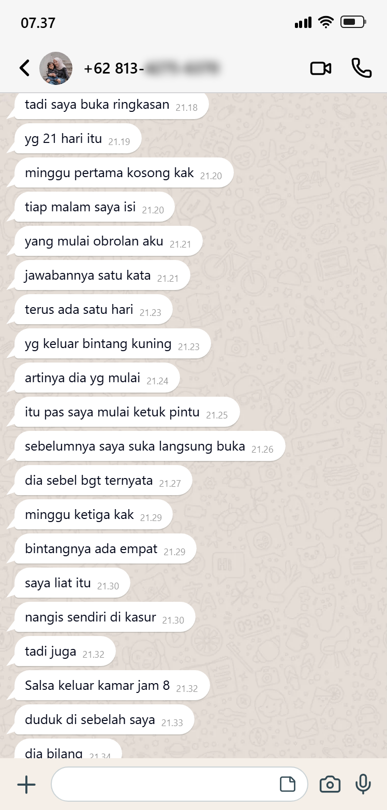
Jendelamu mungkin tinggal 3 sampai 5 tahun. Mungkin kurang.
Tahun-tahun ketika kamu masih didengar. Ketika kamu masih bisa membentuk orang dewasa seperti apa dia nanti. Ketika hubungan yang kamu bangun sekarang menentukan apakah dia masih mau ada di hidupmu saat umurnya 25, 35, 45, dan apakah dia masih pulang di luar Lebaran.
Setiap hari menunggu adalah hari yang nggak bisa diulang.
Setiap ribut yang berakhir buruk menambah satu bata di tembok antara kalian.
Setiap kali kamu bereaksi, bukan merespons, kamu kehilangan sedikit lagi.
Tapi belum terlambat. Asal mulai sekarang.
Bandingkan dengan yang biasa dicoba: satu sesi konsultasi Rp200 ribu sampai Rp600 ribu, satu paket kelas parenting sampai Rp500 ribu. Teen Reconnect sekali bayar, tanpa langganan, dan harganya jauh di bawah itu. Angkanya ada di halaman berikutnya.
Panduan Akses berisi kode masuk dikirim ke email yang kamu pakai saat order.
Nggak apa-apa, kamu cuma salah klik. Balik ke email yang sama, lalu:
Setiap pilihanmu sekarang terasa sampai puluhan tahun ke depan.
Pilih kedekatan, bukan kontrol.
Pilih ketegasan, bukan rasa takut.
Pilih tumbuh, bukan tetap nyaman.
Jadi orang tua yang dia butuhkan sekarang, dan orang dewasa yang ingin terus dia kenal nanti.
Malam ini cukup mulai dari satu sapaan, tanpa pertanyaan apa pun. Karena yang nggak dia katakan, justru yang paling perlu kamu dengar.
Dibuka dari browser HP atau laptop. Tanpa install, tanpa akun.